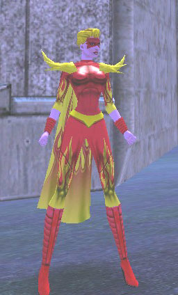

| Prologue:
At twelve, Ashley was old enough to know what death meant. Real death. Not a cape's trip-to-the-hospital death. Not a bad guy's "arrested" death. Actual, final real-person death. It meant that her father was never coming home. It meant that her father, or what they had been able to find of him, was in that box, going into the ground. She stood beside her mother, wearing a new black dress that she would have hated even if not for the occasion. Aunt Betty had bought it, had shown up at the house with it that morning just as Mom and Ashley were both realizing that Ashley had nothing suitable to wear to a funeral. Mom had gotten crying all over again. Mom had barely stopped crying in four days. Since the phone call. Since the fire. FOUR FIREFIGHTERS DIE IN KING'S ROW INFERNO, the headline had read. It was in the "Call of Duty" section of the paper, along with a story about two police officers slain in a shootout with the Hellions. As always, the larger part of that section was taken up with what the capes called the "Agony of Defeat" list. Emerald Crusader defeated by Vahzilok. Mighty-Mite defeated by Trolls. The Brick defeated six times in Perez Park. Raggedy Android defeated by Cannon Knights. Mystic Argenta defeated twice by Circle of Thorns. That, Ashley had always thought, wasn't fair. The defeated capes would be back in action the same day, but the police officers and firefighters were gone for good, taken from their grieving families. And nobody in Paragon City cared. Where had the capes been when her father and the others entered that burning building? Wasn't it important enough to bother with? All they cared about was doing their own thing. Some of them would walk or leap, or fly right past a mugging or a murder. Too busy. Too special. They had bigger and better things to do. And still, people loved them. Adored them. Fawned over them. Rushed up to them on the streets to tell them how great they were. While men like her father worked their whole lives trying to help others, paid for it with their lives, and got a few lines in the paper and the city to foot the bill for the funeral. At last, the service was over. The mourners milled around the cemetery, talking in low voices. They were family members, friends of the family, and the greater extended family of firefighters. A gleaming red procession of fire engines had formed an honor guard to the four hearses, sirens off but lights whirling and flashing. A single news crew had shown up, filming the event. Ashley figured it'd be good for maybe another three minutes on the evening news. Right after the announcement of the winner of the latest Atlas Park costume contest, right before the weather. She could almost hear the newscaster. " one hundred thousand influence. And in other local news, Paragon City's fire department turned out in force today to mourn the loss of four of their own " Words of comfort were given and received awkwardly, everyone knowing that no matter how heartfelt the condolences, there was no way that such words could be anything but empty and meaningless. The three widows and one widower all looked like they only wanted to get out of here, to go home with their kids and try to pick up the shattered pieces of their lives. They had all known that this was the risk. But that knowing did not make it any easier. Every time someone else came up and said to Ashley's mother, "Mrs. Burns, I am so sorry for your loss," or "Oh, Connie I know how much you'll miss him," Ashley felt like screaming. And when they turned to her, their gazes so sad and solemn, she wanted to kick them and slap them. How dare they tell her they knew how she must feel? How dare they tell her that her father would have wanted her to be strong and brave for her mother's sake? Who were they to tell her any of that? As soon as she could, she slipped away from Mom and wandered through the crowd, head down, blond hair hanging in her face. She knew that the funeral was supposed to help her think about her father's soul, gone to someplace better. Not his poor, charred body, and how he'd had to be identified by dental records. Not what it must have been like for him in those last moments. The department had made arrangements for them to see a counselor, someone whose job it was to help them deal with their grief. Ashley couldn't stand the thought of talking about Dad to anyone but Mom. She didn't even want to talk about it with Aunt Betty and Uncle Jim, or her cousins. Least of all the other kids at school. She didn't want to go back to school. They would want to hear everything. They'd ask her horrible questions, wanting to know exactly what had happened to her father. They'd ask if she had seen his body, and what it had been like. And if the teasing about her name had been bad before What did you have to do to change your name, anyway? What had her parents been thinking, naming her Ashley Burns? What had her father been thinking, becoming a firefighter with a last name like Burns? He used to laugh about it, say that it was destiny. "At least I didn't want to be a chef," he would say. "No one would have come to my restaurant." Ashley had gotten away from the cluster of people around the four graves, moving over the gentle green lawns with their embedded brass plaques or rising stone markers and white crosses. This part of the cemetery was reserved for city employees, so she saw the mottoes of the police and fire department repeated over and over. They were decorated with flower arrangements, flags, stuffed animals, photographs. She noted with morbid interest that many of the dates of birth and death were too close together. Too many men and women who had died younger than they should have. Who had probably, like her father, died in pain and terror. Circling back, she chose a path that would take her through a pretty copse of trees. It was one of the nicest parts of the cemetery, and in the small region of her mind that could be glad about such things, she was glad that her father was buried here. There were so few green places in Paragon City that were nice. Even Prometheus Park was so dangerous these days that no kids ever went there. And Perez Park? Ashley couldn't remember the last time she had been to Perez Park. On a picnic, maybe, as a little girl of three or four. She had dim memories of being fascinated by the dense tree trunks and denser foliage, and the labyrinth of always-gloomy paths. The day was unseasonably bright and warm, and in her black dress and tights Ashley was sweating. She stepped into the cool patch of shade and wiped her face with the handkerchief Aunt Betty had put into her little purse. She was not looking forward to what came next. She wasn't even sure what to call it. A reception? Like after a wedding? Everyone would be going back to the firehouse for food and cake. That seemed grossly inappropriate somehow. Cake? How could they eat cake? " sure about that?" someone asked in a tone of rising anger. Ashley looked around and saw that she was not alone in the little grove. Two men were at the far edge, with their backs to her and their heads leaned conspiratorially close. She recognized both of them. Charles Vayle was her father's captain, a stocky man with a grey crewcut. The tall, lean man with the dark hair and the scuffed leather jacket was Detective Cordova, the uncle of a girl Ashley knew from school. Captain Vayle had been the one who'd spoken, who'd sounded so angry. Ashley held her breath and prepared to back out quietly, not wanting to disturb them. But Cordova's words stopped her in her tracks. "We're sure. We found traces of accelerant all over the scene. It was set. It was deliberate. Same M.O. as the tenement fires over in the Gish." "Son of a bitch!" Captain Vayle swore, slamming a fist into the trunk of a tree hard enough to make a swirl of leaves fall loose. "Tell me you're going to catch the guy, Jack." "We're doing everything we can. But, listen, Charles, you've got to keep this to yourself for now." "What?" barked Captain Vayle. "Not my idea. I want to go public, tell the papers, get it on the news, warn people about this firebug. He's escalating. First it was abandoned warehouses, bad, but uninhabited. Now this apartment building." "So why don't you?" Vayle chuckled bitterly. "Let me guess. Pressure on the department from the mayor's office. Nobody wants to admit that we've got an arsonist on the loose. We've got hooded creeps summoning demons on rooftops, we've got mad scientists swiping cadavers from the morgue and turning them into walking flyblown zombies, we've got gang members running riot wherever you look, but they're afraid that an arsonist will scare people and give Paragon City a bad name." "About that, yeah," Cordova said. He sighed. "And, well, it is King's Row. Not like it's happening in Steel Canyon." "You don't need to explain it to me," Vayle said. "If someone burns down a building in SC, that's news. If it happens in King's Row, it's urban renewal. Damn it, Jack I lost four men!" "I know." Cordova grasped his shoulder. "We're going to catch him. I promise." "Paula's waiting for me. I'd better go before she starts wondering where I am." Vayle shook his head and they moved off through the trees. Ashley sank into a sitting position. She could not believe what she had heard. Someone had set that fire? The fire that had killed her father? Someone had done it on purpose? Accelerant she knew what that meant. That meant gasoline, or lighter fluid, or something else to burn fast and hot and help a blaze get started. Not an accident. Not an oven mitt left on a stove burner not a cigarette dropped between the cushions of the couch not an unattended candle too close to the curtains not faulty wiring not a stroke of lightning not even a little kid messing with matches. Arson. On purpose. Her father was dead because someone liked to start fires. Didn't that make it murder? She sat where she was, arms wrapped around her knees, staring vacantly at nothing. In her mind's eye, she was seeing the apartment building, shabby and run-down like so much of King's Row. Grimy brick with an old metal fire escape zig-zagging up the side and big rattling air units on the roof. Overflowing trash bin in the alley. Blowing newspapers. Forlorn shopping cart at the corner. Just another piece of low-income housing, where the halls always smelled of frying hamburger and cat pee. The plaster would be gouged and marked with graffiti. The radiators would clank and the pipes would gurgle. The babble of televisions and radios. Crying babies. Couples arguing about money, complaining about work. And then, late that night, someone sneaking in through an open window or unlocked door. Some wild-eyed, grinning punk with greasy hair and zits, pot leaves and the names of heavy metal bands tattooed in blue ballpoint ink on his arms. She saw him clearly in her imagination. Saw him hunkering in a corner, dousing wadded-up newspapers and dirty rags with lighter fluid. Touching a match, and watching, his sallow face underlit by flickering orange as the fire spread. Everyone who lived in the building had survived. She knew that, had heard all about it from Mrs. Owen, a friend of Mom's whose husband had also died in the blaze. An elderly woman, an insomniac who lived on the first floor, had smelled the smoke. Though the building was old, it did have a fire alarm, and the old lady had pulled it. But the fire department had arrived to a scene of confusion. Not knowing whether or not anyone was still trapped inside, Ashley's father and five others had gone in to do a search, while the flames leaped and roared and windows shattered in storms of super-heated glass. They had rescued three people who had been overcome by the smoke and two children who'd been hiding, frightened, in a bedroom closet. They had rescued a fat pug dog and a yowling Siamese cat. Then the floor collapsed under them. Two of the firefighters had emerged, one of them badly burned and the other with a broken arm from a falling beam that had knocked him through a wall. The other four had not. By then, no one else could get in, and their friends had been forced to wait until the fire was extinguished before going in. And now, Ashley knew, it had been arson. It had been deliberate. Her father and three of his friends had been murdered. All because someone liked to play with fire. ** Thirteen Years Later She paused at the curb, taking in the site in a long, measured look. It was still smoldering, blackened beams jutting up from a pile of rubble. Here and there amid the debris, she could see identifiable objects a washing machine, the slightly melted remains of a row of bowling trophies, a television with imploded screen, a clock that was still ticking. But most of it, yes, most of it was destroyed. Long filthy-black rivers of water washed into the gutter. A few firefighters in full gear moved carefully around, searching for hot spots to douse with the hoses. The street was barricaded at both ends by sawhorses and police cars. When the house had been ablaze, she was sure that every neighbor on the street must have turned out to gawk. It would have been a brilliant fire-rose, blooming red-orange in the night. There would have been shrieking sirens and activity. Now, though, it was daylight. The flames were gone. Only soot-mud and the acrid tang of old smoke in the air remained. People had gone off to work, gotten the kids to school, or ducked back inside to try and see themselves on the morning news. One of the nearest firefighters raised a hand. "Ashley!" "Jase? That you?" He pulled off his helmet, revealing dark hair all tangled and pasted to his head. His tanned skin was streaked with residue, but his blue eyes were bright. "None other." Jase Moritz, in Ashley Burns' informed opinion, could have claimed any month if he ever wanted to sit for one of those hunky-firemen calendars so popular in other cities. There was, of course, no call for that kind of thing here. Who cared about monthly pictures of hunky firemen photographed with their shirts off, when you could choose from calendars, magazines and posters by Superhero Illustrated, Paragon Prime, Girls of Galaxy City, Atlas By Night, or any of a hundred other companies? Well, Ashley thought as she crossed the singed lawn toward him, she would have bought one. Every year. She and Jase had known each other since grade school. Neither of them had exactly followed family expectations. Jase's parents were both doctors, but Jase had joined the fire department rather than go to med school. And rather than become a firefighter herself, like her father, Ashley too had taken a slightly different direction. "Miss! Miss, excuse me, you can't be here." A uniformed police officer hurried over, portly and flushing either from exertion or embarrassment at letting a civilian get this close on his watch. "Officer Relnick, it's all right," Jase said. "This is " "Ashley Burns," Ashley said, digging one of her cards from her pocket. "I'm with the A.I.U." Relnick took the card, scrutinized it, and then looked her over. She was dressed in a functional, casual way suitable for tromping around sites like this, in sturdy hiking boots, jeans, and a roomy Paragon City University sweatshirt with the sleeves pushed up. Her thick, wavy blond hair was cropped short, and she wore neither make-up nor jewelry. She saw the skeptical look on his round, red face and slid her sunglasses partway down her nose. "Is there a problem?" "You're with the Arson Investigating Unit," he said. "Yes." "And your name is Ashley Burns?" She managed a thin smile. "Whatever jokes you want to make, Officer Relnick, believe me, I have heard them before." "I bet you have." He nodded. "Okay, then. Do whatever you do." "Oh, I will." She headed for the house, Jase Moritz pacing her. "Anything obvious?" "Not yet." Jase pointed. "Looks like it started in the kitchen." "Anyone hurt?" "No, thank God. The Curtises were on vacation. Hawaii. Hope it was a good trip, because having to come back to something like this will really suck." Ashley picked her way through the rubble that had once been a family's life. Years, even decades of memories, up in smoke. Photo albums, keepsakes, clothes, toys, books, personal papers whoosh, crackle, and gone. In the middle of a relatively unscathed patch of what had probably been the living room, she found a large aquarium. The glass walls had burst, spilling gallons of water that had saved the carpet. The fish, however, had not come off so lucky. She saw a silver trinket box that would probably clean up fairly well. A bunch of dolls fused into bizarre pink plastic blobs around the skeleton of a dollhouse. The blistered remains of a three-ring binder that had held some little boy's collection of supergroup trading cards, a few of the masked faces still discernible. But she was not here to salvage, not here to take notes for an insurance company. She was here to do her job. ** Three days after his return from Hawaii, Albert Curtis was arrested and charged with setting fire to his own house. He had lost his job four months previously, a fact that he had kept from everyone including his wife. Every day, Albert had gone off to 'work' taking odd jobs here and there but spending the rest of his time in local bars. When the family's savings had begun to run out, he decided to burn the house down and collect on the insurance. Two million, he presumed, would be enough to get them all started in a new life. He had rigged what the investigators all agreed was a fairly clever device, hooked up to the automatic cat-food dispenser that doled out a week's worth of kitty kibble in daily doses. When the device clicked around to Thursday, it had triggered a fuse that ignited a leftover 4th of July firework in a nest of kindling. The resulting flames had spread from the kitchen throughout the house, gutting it. The cat, an orange-stripe longhair named Skittles, was out of the house at the time. Albert Curtis had thought his alibi on a Maui beach at the time of the fire would be airtight. But all too soon, the entire story came out. His former employer testified, as did three bartenders and a fellow patron who remembered Albert joking about insurance money two days before the family left for Hawaii. His wife divorced him and got custody of the kids. Albert went to jail. The insurance company got to keep their two million. And all because one diligent arson investigator found a few snips of fuse wire and chemical residue from fireworks near the cat-food dispenser. ** "Who would do something like this? Who would burn down a church? How? And why?" The priest was distraught, and understandably so. He waved his arms around the room, and it took the best efforts of the cops on the scene to try and calm him down. The hem of his cassock was wet, dragging trails of grey-brown muck on the floor. His white hair stood up in crazy corkscrews, streaked with soot. From the outside, there hadn't been much evidence of the fire. A single stained glass window had been broken, jagged panes still hanging at the edges of the framework. Part of some saint and some angel, with scrolls inscribed in Latin floating around their heads. The rest of the colorful glass shards were sprayed across the floor. Inside the church, indicating that something had been used to smash the glass from the outside. The rest of the stained glass windows, intact, glittered like jewels in the morning sunshine and threw a kaleidoscope of color across the pews and wooden floor. The upper reaches were filled with soft shadows. There was a hush of reverence about the place, even with firefighters and police going about their business. An early-bird altar boy had been in the process of setting up for services when he had smelled smoke, and found one corner of the church engulfed in a growing inferno. He was a brave boy and quick-thinking, and first tried to smother the flames with a fire extinguisher kept in a closet. But the fire had spread too rapidly, forcing him to retreat and call 911. His timely arrival and action had prevented a disaster. Really, only that corner was seriously burnt. There was some smoke and water damage, but all things considered, the church had come off not too much the worse for wear. Ashley's gaze made a practiced arc, following the path that she expected a fuel-filled bottle stoppered with a lit rag the classic Molotov cocktail, an oldie but a goodie might have struck after coming through the window. Right away, she knew that something was wrong. The actual fire had been well out of range of the window. Even allowing for a mighty throw that would have done an NFL quarterback proud, the angle was all wrong. She did see something along her projected path, though, and proceeded to it with her arson investigation kit swinging at her side. The satiny finish of the floor was scarred in a few places along the way, as if something heavy and with rough edges had bounced along before yes, there it was, a brick. It had come to rest underneath a pew. So, the brick had been hurled through the window, shattering a large hole in the glass. But a thrown brick would not have been able to start a fire. It had no handy threat letters rubber-banded to it, no spray-painted hate messages. Just a brick, red-brown and crumbly, the sort of thing that could have fallen off any old King's Row building and been picked up out of an alley. Not a Molotov cocktail, then. The gaping window was large enough to have admitted someone, if that someone clambered through carefully or didn't mind risking a few cuts on the hands. The brick had just been to gain entry into the church. Ashley moved on to the corner where the fire had started. She watched where she stepped, not wanting to track through or slip in the puddles left by the fire hoses. She expected to find a stack of charred hymnals or some other papery substance that had been soaked in accelerant and then ignited. The fire extinguisher had left curds of foamy scum that had been washed to the edges by the hoses. The extinguisher itself, a long red cylinder, lay where the altar boy had dropped it. Black scorch marks reached well up toward the ceiling and fanned out across the walls. The floorboards were edged in charcoal, but the floor had not caved in. More scorch marks dotted the backs of pews and the side of a gorgeous antique cabinet. They had a random scattering distribution to them that made Ashley's brows knit in a frown. It didn't fit. It wasn't right. The pattern was all wrong, not fitting with anything she knew. She went to work with tweezers and swabs, collecting samples. The longer she was at it, the more her frown deepened, until it became a scowl that furrowed her forehead into lines. Around her, the usual activity and mop-up went on. She was so accustomed to it that she paid little notice. Nor did any of them, used to her, register anything more about her than the fact of her presence. Three hours later, well past lunchtime though she hadn't had the time, opportunity, or appetite for food, she showed up sooty and disheveled at her supervisor's office door to present her findings. Nan Holbrook flipped slowly through the pages of scribbled hand-written notes, then raised her head. Her eyes were narrowed, her thin lips pursed. "What's this supposed to be, Burns? Was it set, or not?" "It was set," Ashley replied. "I'm sure of that. I just I've never seen anything like it before. The lab results won't be back until tomorrow at the earliest, but I'm betting that there won't be a trace of any accelerants." "What caused it, then?" "I don't know yet." "I need more than that." Holbrook flicked her fingers at the sheaf of papers. "Right now, Burns, you're giving me nothing. There's no indication that it was deliberate." "There's no other possible cause. No wiring in that part of the building at all, so no electrical fire. No flame sources " "In a church?" Holbrook's eyebrows arched. "Admittedly, it's been a while, but every church I've ever been in was wall-to-wall candles." "Nothing in that part of the building. No melted wax anywhere around the burned area. Even if someone had held the wick end to the wall until it caught which, come on, you know as well as I do would have taken all day there would have been wax runoff." "It could have been anything," Holbrook said. "Look at these scorch patterns," Ashley said, fanning out a diagram. "These suggest several different attempts at getting the blaze going. It's almost like what you'd expect from someone shooting short bursts from a flamethrower." "Could that be it? Some nut opens up with a flamethrower in church?" Ashley tried to hide her annoyance. Nan Holbrook knew better than that. "A flamethrower uses fuel," she said. "There'd be traces. Chemicals." "You said the results haven't come back." "When they do, they won't show any. I've worked on flamethrower cases before. Remember that car down by the Aqueduct? It was toasted hood to trunk with a flamethrower, and it was covered with chemical residue. I could smell it." "So this could be a different kind." "I doubt it. I've got a feeling on this one." "Fine." Holbrook exhaled and tapped the papers on the desk, squaring the stack. "When you get more, let me know. But unless you can come up with something more substantial than a feeling, it's looking like this one might get past us. We've got to have a little bit to go on, at least." "It's arson," she said. "It's got to be. There's no other explanation. I've checked." Two days later, she still had no other explanation. Every lab test had come back negative for every accelerant imaginable and some that she had never considered. The building's wiring was examined and showed no faults. Meteorologists from Skyway City and Steel Canyon confirmed no lightning strikes anywhere in the area. Holbrook had insisted she follow up on the flamethrower theory, but her every inquiry into the hardware told her that even the classified military prototypes used fuel that left a detectable trace. The incident had happened early on a Sunday morning, but not so early that the streets of King's Row had been totally empty, and no one in the vicinity had noticed anyone running around toting a contraption made up of nozzles and cylinders of any description. "Spontaneous combustion?" Holbrook asked sourly when Ashley presented these latest findings or lack thereof. "Act of God?" "Funny," Ashley said. "We need to close this one, Burns. You've got diddly-squat. We can't keep an investigation open with no evidence and nothing to support it except your hunch." "I know there's something going on with this," she persisted. "Can't I keep looking into it?" "As long as it doesn't interfere with these new cases," Holbrook said, handing her a scrap of paper with two addresses printed in block caps. "Put it on the back burner, so to speak." She took the paper and left the office, grumbling. The first address was a mom-and-pop grocery in the Gish, which had been closed a week ago after a Hellions robbery in which the owner and proprietor as well as a clerk and two customers had been shot. Last night, the empty store had gone up in flames. The fire had spread to the buildings on either side, but had been contained before it could get further. A few shriveled, melted scraps of police tape from the previous crime were still visible, curled on the sidewalk like dead snakes. The police had found the back door kicked down, and believed that someone had broken into the store hoping to rob the place, then set it on fire either to cover his tracks, or out of disappointment at finding nothing in the register. Ashley went in the same way, and had only gotten two steps into the building before something clicked. She backed out, and examined the door frame and surrounding wall. Scorch marks. And the plate that held the doorknob and lock was warped, disfigured, as if from a blast of incredible heat. Someone had tried to burn through the door, or used fire to weaken the lock before kicking it open the kick was obvious from the shoe prints on the door itself. Running the scene turned out to be a nightmare. There were trace accelerants everywhere the store had sold hair spray, lighter fluid and two dozen other flammable household products. While these had played their own part in helping the fire to spread, Ashley was convinced it had been a natural result of the fire. They had simply overheated and exploded on the shelves. At what she determined was the ignition point itself, she didn't find anything. And along the walls, just like in the church, she found the same scattered burn marks. ** SERIAL ARSONIST PLAGUING KING'S ROW? asked the headlines. Nan Holbrook slapped the newspaper down on her desk and gave Ashley a sour look. "Well, Burns?" "What do you want me to say? Yes, I talked to that reporter." "And told him we have a serial arsonist? Are you trying to start a panic?" "People need to know!" "We don't have any proof that these fires were set. We have a string of coincidences and no actual evidence." "They are connected! It's the same guy, I know it is! We've got to catch him, stop him, before someone else gets killed." Ashley pointed to the sidebar article, which described how an elderly couple had died in a house fire that had also put their live-in housekeeper in the hospital with second-degree burns and smoke inhalation, and claimed the lives of their nine parakeets. "Burns, I'm well aware of what a crusader you are," Holbrook said, clearly making an effort to be patient and supportive. "I know how much you hate it when an arsonist gets away with the crime. You're tenacious. Usually, that's a good thing. You get results. But this time, you're getting obsessed." "I want to find this guy," Ashley said. "I want to catch him." "There is no guy. There is no evidence." "There is! I just I just can't figure it out. How can you sit there and say that these fires aren't connected? Look at everything they have in common! Someone's found a new way to start a fire and keep it going without using any accelerants that we can identify. We've got to find out what, and how, and who, and stop it!" "You're getting too personally involved with this one. How long has it been since you've taken a vacation?" "Oh, God!" Ashley flung her arms in the air. "This is where you tell me I've been working too hard, how I need a break! And when I say I don't want one, you'll turn it into a threat. We must see all the same movies. You're the crusty supervisor who refuses to believe anything out of the ordinary until it's too late and I'm proven right!" "If I am," Holbrook said, bolting upright and no longer sounding like she was making an effort to be calm, "then you're the chick in Twister who grows up to be a storm chaser so she can hunt down and kill the tornado that took her Daddy away!" Speechless with shock and fury, Ashley stared at her. Holbrook turned maroon. "That was low," she said, dropping her gaze. "Ashley, I'm sorry. I shouldn't have said that. I shouldn't have dragged your father into this." "I quit." "Ashley!" She turned and stalked out of the office. The A.I.U. shared quarters with several other city agencies, and most of the time, the various rooms were lively with conversation and people hurrying around on various errands. Now, except for the clatter of computer keys somewhere, and the incessant ringing of a phone, it was quiet. Everyone in the hall was frozen in the manner of kids playing statue-tag, clutching coffee cups or manila folders full of documents. When Ashley appeared, there was a sort of universal scramble as they all tried to go about their normal business and act like they hadn't heard. But she knew, with a dull flare of anger, that they'd been listening. Not that she'd ever made any secret of her reasons for going into this line of work. All she'd ever wanted, from the time she was twelve years old, was to help catch arsonists. Stop them. Prevent families from losing their homes, people from losing their lives children from losing their parents. "Ashley!" Holbrook stuck her head out. "Don't do this. Come back in and let's talk about it." She continued on her way, spine stiff, jaw clenched. Her own office, which she shared with Angie Reeves, was a small one at the end of the hall. Angie was nowhere to be seen, which was a small blessing. They had never gotten along all that well anyway. Ashley cared about catching the bad guys. Angie cared about making sure nobody bilked their insurance companies out of undeserved fortunes. And since Ashley had been the one to break the Curtis case, Angie had barely been speaking to her anyway. Ashley grabbed her purse, shoved some personal effects into a cardboard box, and picked up the folder she'd been compiling about the latest string of suspicious fires. Holbrook didn't follow her and try to talk her out of it as Ashley expected. No one said anything to her as she walked to the elevators and hit the button. ** She got off the train and emerged from the station, seeing Atlas Park unfold in front of her in a panorama of towering statues, lush greenery, fountains, and the flag-topped rotunda of her destination, City Hall. Hitching the strap of her bag higher onto her shoulder, Ashley moved briskly and with purpose along the sidewalk. She veered into a parking lot, passed a green sedan, and was pulled up short when someone grabbed her purse. "Just give it here, lady." There was a hard tug. The strap slipped. Ashley grabbed for it and suddenly found herself at one end of a tug-of-war. Her opponent was a man with a blond crew cut, wearing an orange shirt with the sleeves torn away. Another man stepped from behind the car, holding a baseball bat. "Help!" Ashley blurted. "Someone, help!" "Think of it as charity," snarled the one with the bat. Crew-Cut pulled harder. Ashley refused to let go. Loose change, lip balm and a packet of tissues fell from her purse. Then, out of nowhere, a sparkling wave of pink-purple force struck Crew-Cut in the chest and knocked him flying. The sudden release of tension on the purse strap made Ashley overbalance and fall on her butt on the blacktop. "Great, Boy Scouts and Brownies," the man with the bat said, turning and drawing himself up in a hostile stance. Crew-Cut staggered upright just in time for a long sheeting wave of purple light to skim under both thugs, sweeping their feet out from under them again. The one with the bat slammed into the side of the car. Ashley just sat there, mouth hanging open, as a diminutive elfin woman pranced up in thigh-high stiletto-heeled boots. The rest of her costume was as outrageous as the boots, skintight and revealing, the color of cotton-candy. A long topknot, also pink, flounced from the top of an otherwise bald head, with pertly pointed ears. Carefully, Ashley crouched and stood and backed off, eyes wide, hands held up to show that she was unarmed and harmless. Neither the thugs nor the pink woman paid any attention. Crew-Cut drew a gun and took a potshot at the elfin woman, who stiffened slightly but showed no other signs of pain as the bullet ripped into her. She thrust out a hand and more pink-purple sparkles erupted from it, knocking Crew-Cut over for the third time in as many seconds. He got up and ran for it. Baseball Bat took a swing. The Louisville Slugger bounced off the woman's bald head with a horrible hollow thunk. She retaliated by popping him in the nose with one ladylike little punch. Incredibly, it was enough to crumple him he bent double, then fell to his knees, then sprawled face down on the painted lines of the parking lot. Heels clicking, the pink woman raced after the fleeing Crew-Cut, who had jumped a tall wrought-iron fence and charged into the street careless of traffic. The pink woman sprang lightly onto the fence and swept her arm. Another sheet of purple light skimmed out, catching Crew-Cut and bowling him over. He, too, collapsed onto his face and did not move again. The little pink woman swiveled this way and that, as if checking to see whether she had missed anything. Ashley went over to her, amazed. She had seen costumed heroes before, of course she had she'd grown up in Paragon City. But never up this close. "That was amazing!" Ashley heard herself squeal, and actually clapped her hands with giddy excitement. An impish smile made the pink woman's eyes and teeth twinkle, and then she was on her way, running toward Prometheus Park, trim little legs pumping, trim little bottom switching back and forth, topknot flinging side to side. Getting hold of herself what had come over her, gushing like that? what a stupid thing to say! Ashley picked up her purse and her scattered belongings. She proceeded into Atlas Plaza, passing the hovering police drones with their flashing red and blue lights. The plaza was full of capes. Ashley skirted them, sometimes having to sidestep out of the way as they rushed past without a second look or bounded over hedges and low walls. She went up the steps and through the large glass doors into City Hall. The inner rotunda had a marble floor and an echoing dome of a ceiling. It was ringed with statues. Capes came and went, some talking to officials, others heading for a desk marked "Supergroup Registration." To Ashley's right, a brass sign identified the wing housing "New Hero Assignments." She turned left, into the mundane administration section. Much less glitz and glamour here threadbare carpets, dented filing cabinets, the smell of dust and old paper, crowded offices, harried-looking people. Phones rang, keyboards clattered, fax machines hummed, coffee makers gurgled. Although she had technically resigned, she still had her Arson Investigation Unit identification card, and showing it got her into the Hall of Records without question. Once there, she went to work searching through the old files. She was looking for a connection, anything to explain or shed new light on the King's Row fires. After a while, she found a possibility. There had been a similar series of fires in Cherry Hills a few years ago, back when Cherry Hills had still been a nice neighborhood. Ashley read through the files carefully, but didn't find much. The details were sketchy at best. Maybe she could learn more by going there and having a look around. She could talk to the guy in charge, a cop named Wincott. The name rang a faint bell. He was on various city task forces, mostly dealing with the sharp increase in gang violence. Judging by what had just happened to her, within sight of City Hall, she wondered how good of a job they were doing. Every day it seemed like there were more and more criminals loose on the streets. She did not relish the idea of paying a visit to Cherry Hills. That part of town was called the Hollows now. It had gone bad in a hurry, turning a once prosperous neighborhood into the next thing to a war zone. The decline had been literal as well as figurative during the last big quake, which had caused a sizeable portion of the neighborhood to tumble into massive sinkholes. These days, the Hollows was walled off and patrolled by armed guards, and the gangs still ran rampant. She didn't even know how many gangs there were these days. First there had been the Outcasts and the Trolls, duking it out for turf. Then new gangs had moved in. Where did they all come from? Why couldn't something be done? Should she really bother Wincott with her trifling concerns? One arsonist wasn't much when it came to the big picture. And there probably wasn't much of a connection anyway. But she had to find out for sure. If there was some link between the Cherry Hills fires and the ones in King's Row, she wanted to know what that link was. Wanted to know who was responsible, and put that person behind bars. Anything Wincott could tell her might be useful. Ashley put the files away, left City Hall, and headed for the Hollows. On the way, she witnessed an armored figure with a battleaxe hewing through fly-buzzing animated corpses, a man whose lumpy green skin was covered with long bony spines, and crackling electric-blue lightning from a myriad of small robot-like creatures attacking a black-clad woman who wielded a katana. Then she was at the entrance to the Hollows. The massive wall that surrounded Atlas Park was broken by a gate. The two guards examined her AIU credentials, heavy-duty shotguns slung over their shoulders, and finally let her through. She came out into a war zone of chain link topped with barbed wire, the air peppered with regular gunshots. Officers crouched behind fortifications made from sandbags, ratcheting their shotguns and taking aim. Many of the buildings were still standing, but had a vacant, abandoned look. Wincott was easy enough to find, but Ashley had to wait a few minutes until he got through talking to a muscular man with a robotic arm, a tall woman wearing patriotic colors, and a green scaly man with a tail. Wincott gave her a dubious once-over as she approached. Clearly, she was not the sort he was used to dealing with, not an ordinary like her, just jeans and a sweatshirt. "Can I help you?" "Ashley Burns," she said, showing him her A.I.U. identification. "I'd like to talk to you about some suspicious fires in Cherry Hills." ** She spent the next several days hiking back and forth all over Paragon City, following leads. Wincott had directed her to talk to some woman in Skyway, who had in turn referred her to a doctor in Atlas Park, who had told her about a streetwise guy back in good old King's Row. It was maddening. With movement came the illusion of progress, but three days after venturing into the Hollows, Ashley still, really, was no closer than before to discovering the identity of the arsonist. She was beginning to suspect that Wincott and these other people were simply giving her the runaround, trying on purpose to frustrate her. In her more paranoid moments, she even wondered if they were covering up for the firebug, if it was all some big conspiracy. Her phone had been ringing off the hook Nan Holbrook wanting her to reconsider, Jase Moritz asking if it was true she'd quit her job, her mother calling every day thank goodness for answering machines. "You should talk to Susan Gavins in Steel Canyon," the streetwise guy in King's Row said. "She might be able to help you." He gave her directions, and off she went. Steel Canyon was an upscale district of glittering skyscrapers. It was beautiful in a cold and impersonal way. The lakes were perfect, man-made and flawless, set in manicured parks like diamonds against clean green felt. And even here, gangs and zombies and deranged little robots ran rampant through the streets. Ashley found Susan Gavins standing outside of a nightclub, reading the paper. She was a busty young woman with wild punker hair and a short skirt. The sight of her dimmed Ashley's hopes further. This would be another dead end, or another trip all the way across town to talk to yet someone else "Yeah, I think I know who you're looking for," Susan Gavins said. "At least, I know a guy who's been bragging about all these fires he's set. He's an Outcast. Hangs out at this abandoned warehouse in Atlas Park. I can tell you where it is." "How come you haven't told the police?" demanded Ashley. Susan Gavins pointed down the block. Ashley looked, and saw a scene right out of a horror movie a madman in a butcher's apron, holding a cleaver, was about to chop into the skull of some poor victim. A policeman, unmistakable in his blue uniform, strolled around the corner, froze, and suddenly turned to run with jerky high-knee-pistoning steps and panicky waving arms. "That's why," Susan said. "I saw a Hellion snatch a policewoman's purse the other day. Did she arrest him? Shoot him? Nope. She stood there yanking on her purse until some cape happened by and lightning-blasted the Hellion. Then that policewoman was all over him, going on about how this was the most exciting thing that had ever happened to her, he was a saint, she hoped her kids would be just like him. Enough to make you puke." ** The abandoned warehouse was in the Downside district of Atlas Park. Ashley knew that it was crazy to be going there, much less going there alone, but what else could she do? She'd thought about calling someone, maybe even Nan Holbrook, but ultimately rejected the idea. No one else would believe her. She'd have to find this Outcast arsonist herself, get proof, figure out how he was starting the fires, and then go to Holbrook and present the case. Downside was a bad part of town. She'd had to run away twice from groups of shotgun-toting guys in skullface masks, and once had walked around a corner to find a full-scale brawl going on in the middle of the street. Half a dozen capes were in the process of mowing down three times their number of gang members armed with hatchets, baseball bats, knives and guns. The fight was a dazzling, dizzying display. There were pulses of emerald green light, shopping carts flying through the air, pointy metal things littering the sidewalks. A white-haired man in a tight blue-and-white bodysuit hovered above the melee, exhaling jets of frost. A cheetah-woman sprouted claws from her hands. A gigantic brawny figure that seemed hewn from stone stood in the middle, not even noticing the gunshots and hatchet blows that barely penetrated his rocky armor. When it was over, a bunch of Ashley's fellow spectators ran up, surrounding the capes, bowing and babbling effusive praise. Ashley herself managed to resist, and proceeded on her way. She reached the door into the warehouse, opened it, and slipped inside. Right away, she knew she had gone too far. This was crazy. Stupid. Dangerous. She had made a huge mistake. The interior of the warehouse was divided into grimy hallways. Bulletin boards, pin-ups and old safety posters covered the walls. The air was close, thick with the smells of stale beer and cigarette smoke, and even staler sweat. Empty cans and bottles covered the floor. Cardboard boxes and crates were stacked helter-skelter around large corrugated-metal cargo containers. She could hear distant music and nearer voices. Rough male laughter echoed off the metal walls. Stay calm, Ashley stay calm. Just have a quick look around and then get out of here. Maybe you'll find something you can use to convince Holbrook and the police. Just don't let them see you. The thoughts did little to settle her racing pulse. Feeling clammy with sweat and ready to scream from built-up adrenaline, Ashley inched her way forward until she could peer around the corner. A man was there, pacing back and forth, socking his fist into his palm with solid meaty smacks. Past him, she could see a desk covered with papers and blueprints. Ashley cursed silently. She was sure that the papers on the desk would contain something useful. But with that Outcast in the way if only he would leave! She could zip over there, find what she needed, and get out with him none the wiser. Then, as if granting a wish, someone called out from the depths of the building. "Yo, Vinnie!" "What?" the pacing man yelled back. "Torch wants ta see ya! Shake a leg, huh?" "Awright, awright." Vinnie headed down the hall. Torch? The name had galvanized Ashley. Who else could it belong to but the arsonist? He was here! Here in this building! But what was she going to do? Catch him herself? Not likely. Where was a cape when you needed one? As soon as Vinnie had moved out of sight, Ashley hurried to the desk and started pawing through the papers. Maps of offices another warehouse with a note indicating that a rave was being held there later that night a hospital part of the city sewer complex a shipping manifest for ammunition a purchase order for two thousand baseball bats ... What was she expecting, anyway? A signed confession? An arsonist's autobiography? "How I Did It," by Torch? Then she saw something almost as good a map of someplace labeled "Phoenix Labs," with fire alarms and smoke detectors circled in red, and "BURN BABY BURN!!!" scrawled across it in large block letters written in blazing orange crayon. She snatched it up for a closer look. "Hey! There's some chick in here!" The voice was Vinnie's. Ashley whirled, sending a flurry of papers cascading to the dirty floor. The edge of the desk dug painfully into the small of her back as she pressed against it, paralyzed with terror. He was running down the hall toward her, swinging a baseball bat. Behind him she saw three other Outcasts break into lumbering trots, drawing guns. Then a fourth appeared, and just by looking at him she somehow knew, deep in her heart, that she'd found Torch. He didn't look any different from the others, but something about him radiated an even greater degree of danger and menace. Vinnie had almost reached her. The paralysis that had been holding her motionless suddenly snapped. Ashley ducked as he threw a punch, then took off for the door at a flat out sprint. A gunshot roared. A bullet pinged into the wall, inches from her, as she ran. She groped for the knob. It didn't turn. Ashley risked a frantic glance back. Vinnie and the other Outcasts were closing in, and Torch was right on their heels. He raised his arms in a vee above his head. His palms flared with heat and light. Fiery projectiles shot toward Ashley. She wrenched the knob. It turned. The door swung open and she fell out onto her hands and knees in the gravel yard around the warehouse. The blazing darts of fire sizzled over her head and struck the side of a large metal trash can, blistering the paint and partly melting the metal. Palms abraded, knees skinned and bleeding through the torn denim of her jeans, Ashley ignored the stinging pain and lunged to her feet. She could hear the heavy crashing footsteps of the Outcasts stampeding toward her. There was a high chain link fence enclosing the yard. Ashley knew she could never climb over it before they shot her, so she veered left and ran down an alley between the warehouse and another. More flaming darts streaked past. Torch was gaining. The end of the alley was up ahead, the street, cars and people going by. She didn't want to endanger anyone else by leading this lunatic into the midst of a bunch of innocents, but she had no other way to go. A bullet plucked at the baggy sleeve of her sweatshirt. Screaming, Ashley ran even faster. The end of the alley was close Whack! The baseball bat met the side of her head with a sound that reverberated through every bone in her body. Ashley pitched sideways into the warehouse wall, stumbled, and fell sprawling. She twisted and looked up. Vinnie. He raised the bat again. Someone jumped down from the roof, a lithe male shape dressed all in maroon, his features concealed by a hood. He barely seemed to touch the ground before launching into a spinning kick that catapulted Vinnie ten feet away. Vinnie slid down the opposite wall, limp as a dishrag. The pursuing Outcasts, Torch included, immediately shifted their focus to the newcomer. They closed with him. Guns popped. Torch's hands blazed. The hooded hero leaped and kicked. Though her head was swimming and she was seeing stars, Ashley clawed her way to a standing position and reeled out of the alley, leaving the noisy mayhem behind. She clung to a lamppost until her vision cleared. When it did, she ventured back to the alley and looked in. The bodies of unconscious Outcasts were all over the place. The hooded figure he was short, just a kid, Ashley realized stood with his fists on his hips in the middle of them. She couldn't see his face but sensed that he was scowling. "Nice costume," she said, it honestly being the first thing that came to mind. "The boss got away," he said. "Ran for it, the chicken!" Just then, a man dressed all in yellow and black stripes with a wasp emblazoned on his chest jogged by, paused, studied the kid in the hood, and said, "Hey, want to team up? I've got a mission." "Sure!" the kid replied. "Wait!" Ashley said. "I want to tell you about " But she was too late. Off they went, springing over the chain link fences with ridiculous ease. "Torch," Ashley finished. "I know where he's going to strike next, damn it!" No good. They were gone. ** At last, she understood. She knew how the fires had been started. The way the scorch marks had been spread around, the reason there hadn't been any traces of accelerant. Torch had ignited the blazes with the fire he shot from his hands. He didn't need gasoline or lighter fluid or kindling. "You're kidding me, right?" Nan Holbrook's voice snapped through the phone line. "This is some joke, Burns." "It isn't a joke! I was there. I saw him do it." She was at one of the phone kiosks, wondering in the back of her mind what had ever happened to the actual old-fashioned phone booths that would afford a person a little privacy. With traffic droning by, and people passing, she had to hunch and cup her hand around the receiver just to hear and be heard. "A cape." "He's not a cape. He's an Outcast." "Fire-blasting like a cape?" "I know how crazy it sounds," Ashley said, combing her fingers through her hair in a distracted gesture. "But I'm telling you what I saw. He held up his hands, and they glowed, and then bursts of fire came out. He tried to kill me." "Look, I know the capes can be a nuisance, but they never harm the rest of us," Holbrook said. "Hero Boy saved my cousin from the Skulls." "I said he wasn't a cape!" "I'm not sure what you're saying. Are we supposed to believe that there are gang members out there, running around with super powers? Next you'll be telling me that the Circle of Thorns are real wizards." "I know what I saw," Ashley said. "And I know what he's planning. He's going to burn down Phoenix Labs." Holbrook scoffed. "Not a chance. Do you even know what Phoenix Labs is? They design flame retardants, fire-proofing additives for paints and plastics, and heat-resistant coatings for cookware. That's got to be the least likely place in all of Paragon City that would burn down." "But " Ashley began, and found herself talking to a dead line. She swore and slammed the receiver into its cradle. "That's why he'd target the place!" she yelled at the kiosk. "Of course it is, you stupid woman, can't you see that?" A phone book in a sturdy binder was attached to the kiosk by a length of chain. Ashley thumbed through it until she found a Galaxy City listing for Phoenix Labs. She tried the number. "You have reached the office of Phoenix Labs," a chirpy female voice said. "Our business hours are from eight a.m. to five p.m. Mondays through Fridays, and nine a.m. to one p.m. Saturdays. If you know the three-digit extension of the party you are trying to reach, please enter it now. If not, please press zero or stay on the line." She checked her watch. Almost seven. She pressed zero anyway and waited. The female voice came back on. "I'm sorry, no one is available to take your call at this time. Please call back during normal business hours or leave your message after the tone. Thank you for calling Phoenix Labs." There was a beep, followed by expectant silence. Ashley opened her mouth, decided that there was no way she could say what she had to say without sounding insane, and hung up. She swore again, thumping herself on the forehead with one frustrated fist. Even if she had been able to get a hold of someone at the lab, and told them what she knew, that person would contact either the police or the fire department who would then contact Nan Holbrook who would tell them that Ashley Burns was under a lot of stress lately and not to be taken seriously. No one was going to believe that a renegade super-powered Outcast was going to charbroil the place with fire bolts from his bare hands. And even if by some miracle they did believe her, what if she warned them and then Torch never showed up? He had gotten away from the kid in the hood, and he'd known that his hideout had been breached. He must have realized that there was a good chance his plans had been uncovered. To attack the lab anyway would be too big a risk. Then again, he was a psycho firebug. He might decide to step up his timetable, burn the place sooner than scheduled. In fact, she was sure that was just what he would do. Strike now, strike fast, before she did have a chance to report to anyone. Ashley tore out the phone book page with the Phoenix Labs address, folded it, and shoved it into her pocket. If she couldn't convince anyone else, she would at least look things over herself. ** It was a short ride from Atlas Park to Galaxy City, and the address she had was not far from the train station. All the same, it was eight o'clock and full dark by the time she arrived in front of the sleek white building with the tinted windows. The sign was yellow with red lettering, the 'P' in Phoenix designed to look like a stylized bird rising out of a flame. The front doors had the hours and phone number stenciled onto the glass. They were locked. For one wild moment, Ashley contemplated picking up a trash can from the curb and flinging it through the windows. The alarms would go off, the police would come, and if Torch was around, he wouldn't try anything with the building being watched. He might even be spotted and arrested. What was more likely, she knew, was that she would be spotted and arrested on charges of vandalism and malicious mischief. Holbrook's view under stress, cracked would become the main one. She'd be lucky to get off with only court-ordered therapy. A gangly longhaired hippie ambled past and raised a casual hand in greeting. A nurse glanced at Ashley with idle curiosity. A businessman paused in his cell phone chatter to eyeball her. Wanting to get away from the attention, Ashley retreated across the street to a small, dark bar with a cramped and smoky interior. The television mounted in the upper corner was broadcasting highlights of the day's arena matches, capes making like gladiators and going up against one another in organized sporting combat. A Rikti War pinball machine flashed and jangled beside a neon sign advertising Back Alley Beer The Brawler's Best! A tired-looking waitress came over and plunked a bowl of pretzels onto Ashley's table. "Getcha?" she asked. She had only thought to have a soda, but the long grueling day she'd put in seemed to weigh down on her. "Do you have Fireman's Red?" "Can or bottle?" "Bottle." Her booth was by a window. By the look of them, the blinds had been lowered since they were installed, thick with a sort of greasy dust. Ashley parted the slats and looked at a filthy pane of glass and a small graveyard of dead flies on the sill. She could see the street beyond, though dimmed, as if viewed through a smeared filter. The waitress returned with Ashley's drink, setting a glass on a cardboard coaster and popping the top off the bottle. She prepared to pour. "No, thanks," Ashley said, reaching for the bottle. The glass looked clean, but "Like this is fine." "Suit yourself. That's two-fifty." Fireman's Red was not the best beer in the world and not the worst. It had been her father's favorite and was the favorite of most of the firefighters she knew. A solidarity thing, Jase Moritz had said. Plus, it came in a dark red bottle and had a label featuring a Dalmatian wearing a fireman's hat. What more did they need? She sipped from the neck of the bottle, letting her gaze roam around the bar to touch briefly on her fellow patrons. Most were men, so deep in their drinking that, thankfully, they were oblivious to a single woman in their presence. They stared blankly at the television, where a man in bulky high-tech battle armor was squaring off against what appeared to be a bull-headed minotaur. Now that she was sitting and trying to relax, she was reminded of her various aches and pains, and the looks she'd gotten on the train with her jeans torn out at the knees, the heels of her hands raw and scraped, and a swollen knot on the side of her head where Vinnie had clocked her with the baseball bat. She probed this last wound, wincing. A crust of blood had dried and matted her short blond hair. The flesh felt puffy and tender. Asking for a glass of iced water also got her a skeptical, disapproving eyebrow from the waitress. Ashley dunked a napkin and held the cold, wet wad against her head. Freezing rivulets trickled down her neck, making her shiver. She dabbed at her scraped palms and knees, too. In the dimness of the bar, she couldn't be sure how badly she was banged up, but she thought she'd survive. Drinking more beer, she looked out the window again. It was full night, the Phoenix Labs building across the street dark except for a quick, almost furtive flicker of light in one of the windows. Hard to tell through the tinted glass, but Ashley got up, leaving the bottle half-full on the table. She threw down a dollar tip and went outside for a better look. The windows were dark. The building was empty. She had probably only seen a glimmer of reflection from a passing car's headlights, or some passing cape flying by wrapped in a glowing aurora. She had almost convinced herself of this when she saw the flicker again. This time, she was sure it was coming from inside Phoenix Labs. The front door was shut and locked like before. Ashley hurried down the side of the building, newspapers blowing in eddies of breeze. To her right was a high board fence. From the other side, she heard flies buzz and a clotted, gravelly voice say, "Think of it as organ donation." Shivering, she picked up her pace and came around to the rear of the building. A little park was tucked between two long rectangular pools, the fountains turned off for the night. At the far edge of the park, mostly concealed by trees, a pair of men huddled in what looked like a drug deal. The back door of Phoenix Labs was ajar, the doorframe blackened. Her heart stuttered. "Torch," she whispered. He was here. Now. Inside. The fire might already be started. She didn't have time to run and find a phone. But what else could she do? Not go in after him, certainly that would be crazy. If it was so crazy, how come her feet were carrying her that way? How come her hand was pulling the door open? How come she was stepping inside? What exactly did she think she was going to do? Even if Torch was alone, with Vinnie and his other pet goons currently cooling their heels in jail, he would still overpower her. He had powers. She was just an arson investigator. Fit and tough for a normal citizen, sure, but nothing compared to even the weakest cape. And yet here she was. Inside. The back door gave onto a small room with vending machines along one wall and bulletin boards along another. The motionless air had a faint but bitter tang to it, the smell of chemistry. Mouth dry, heart in her throat, Ashley edged around a corner. A hallway stretched before her, offices opening off of it on both sides. Low-wattage yellow bulbs in wire cages shed enough light to let her see where she was going. She crept down the hall, her feet silent on the sensible carpet. In each office, she saw desks and filing cabinets and computers. At the end of the hall was an intersection, with an empty conference room dead ahead, a stairwell to her left, and a large set of automatic sliding glass doors to her right. Through the glass doors, she could see another long hall, this one floored in industrial grey linoleum and lined with rows of lockers and hooks. Hard hats and lab coats hung from the hooks. At the far end was another door, heavy steel, and designed to function like a garage door, sliding up along a track. The light she'd seen had been from one of the upstairs windows. Ashley avoided the automatic glass doors, not wanting the noise of their opening to alert anyone to her presence. She went slowly up the stairs instead. Another hall. More offices, more conference rooms, something that looked like a break room with cafeteria tables, chairs, and more vending machines. Ashley smelled smoke, and a sick-sweet scent like burnt cookies. The front of the snack machine had bubbled and been partially melted away. A sticky mess of chocolate oozed and dribbled down the machine in brown streams. Charred bits of foil and paper candy wrappers drifted like flecks of ash. Scorch marks covered the walls. A patch of carpet smoldered dully. A small kitchen-sized fire extinguisher was mounted on a bracket next to the microwave. Ashley took it, noticed something wrong with it right away, and saw that the entire mechanism had been hammered and twisted out of shape, rendering the red canister useless. "Nice try," Torch said. He filled the doorway opposite the one she'd come in through. His hands, tendrils of smoke rising from them, dangled at his sides. Recognition lit his eyes. "You," he said. "I remember you. What, are you some sort of cape-in-disguise?" Numbly, Ashley shook her head. "Cop?" "Arson Investigation Unit," she said. Torch threw his head back and bellowed laughter at the ceiling. "You're the one!" he crowed. "I heard there was some stubborn bitch asking around about those fires. Well, you finally found me. Happy?" "Not really." "Guess you know by now how they all got started." He lifted his smoking hands. "This is the future, baby. We Outcasts, we've got connections. I'm one of the first, but there's plenty others. Guys who can start fires. Guys who can control electricity. Guys who can freeze you into an ice cube. Guys who can turn into living boulders. Wait and see. The Outcasts are going to rule this town." "If you can do all that, why " "Oh, shut up," he said. "Don't give me the speech about how we should use our powers for good. Capes are a dime a dozen in Paragon City, and there's damned little profit in being a hero." His grin was terrible. "Besides, I like the burning. I like seeing buildings go up in flames." "You like killing people?" she shot back. "Yeah," he said. "Matter of fact, I do." "Bastard," she said through gritted teeth. "Did you wet the bed and torture animals when you were a little boy, too? Or is it just the fires that you get off on?" His face darkened. "You're a mouthy one, aren't you?" "What, you're going to burn me?" She shrugged haughtily. "Some tough guy, using your powers on a normal. I saw how you ran from that cape earlier today. Can't face the big boys, can you?" "You think one of them's going to bust in here and rescue you, huh? Is that it? Keep me talking while some pair of tights sneaks up? Not going to work, baby." His hands were suddenly gloved in flame. He raised his arms over his head. Twin darts of fire shot from his palms. Ashley dodged sideways, tripped over a folding chair, and almost went down. She cleared a table in a graceless scramble. Still holding the broken fire extinguisher, she swung her body to put all of her weight behind the throw, and let it fly. The red metal canister crunched into Torch's face, breaking his nose and splitting his lips. It landed on his toe with a sound like a mallet striking a bundle of twigs. He howled, then shrieked a string of obscenities. Ashley didn't wait around to see what happened next. She bolted out of the break room, descended the stairs in what felt like a single bound, and screamed as the world turned to a red-hot burst of agony. The next thing she knew, she had belly-flopped onto the carpet at the foot of the stairs, striking her chin on the floor. Her sweatshirt was on fire. Ashley rolled frantically to stifle the flames, screaming again at the searing pain in her back. As she rolled, she saw Torch plunging down the stairs toward her, his face a mask of blood. The automatic glass doors slid open as she skittered toward them on all fours. Another jet of fire streaked past her and set a row of lab coats on fire. Ashley lurched to her feet and broke into a limping, staggering run. Her eyes were on the steel door at the end of the hall, her only thought that if she could reach the door and get through, she might be able to lock it from the other side. It would take Torch a long time to melt his way through solid steel, which could give her time to escape. She grabbed the handle and heaved. The door rattled obligingly up on its track, but she hadn't counted on how high the clearance was. The lower edge of the door was now four feet above her head. She couldn't reach it to drag it closed again. She saw a long metal pole with a hook at one end, propped against the wall for just such a purpose, and snatched it. Torch's words were mangled by his crushed nose, but Ashley understood him anyway as he charged, shouting, down the hall toward her. "Oh, no you don't, you bitch!" Panting, not wanting to think about how badly she must be burned, Ashley stabbed the pole toward the door, trying to catch the hook. It missed, snagged, slipped free, snagged again, held. She pulled. The door rattled downward six inches, ten, a foot, two feet Fire. Whistling bursts of it like small fireworks or incendiary devices, exploding from Torch's hands. Ashley had to let go of the pole to get out of the way. It swayed back and forth, its hook still caught, then came free and clattered on the linoleum. He was on her. There was no more time. Ashley jumped back, then turned and ran deeper into the room that had been revealed when the steel door rose open. She was in a vast open chamber full of pipes, seething vats, tables, stools, drums with biohazard symbols stenciled onto their sides, and squat concrete cylinders topped with metal mesh. Eerie orange light and yellow smoke issued up through the metal mesh. The air was steamy, humid. Catwalks and unlit florescent lights were suspended from the ceiling. The tables were covered with beakers, Bunsen burners, glass tubing, and racks of test tubes. Hissing sounds and a thick, liquid bubbling filled the room. Ashley fled through an obstacle course, Torch hot but literally! on her heels. Every few seconds more jets of flame would shoot past, but either by luck or by skill none scored a direct hit. Ashley was banking on luck, and also dismally aware that her luck must be running out. Small fires had erupted all around, marking the wild, weaving path they had taken through the vats and pipes. A beaker burst with a musical tinkle, the reddish fluid that had been contained within it igniting in a brilliant whoosh. Dark smoke spiraled through the grids of the catwalks. Other smoke, a churning grey-white billow streaked with sulfurous yellow, poured and spread across the floor. Seeing this, Ashley felt a new surge of fear. Smoke like that, fearfully hot but denser than air, could only be toxic. A series of small explosions like machine gun fire were followed by a single colossal mortar blast that shook the entire room. The hanging lights swayed as if in the grips of an earthquake. Bolts tore loose, sending sections of catwalk scything down. Ashley saw Torch stop short in the middle of the destruction. His jaw dropped and his eyes grew round as comprehension dawned. The interior of the lab was a hellish inferno, masses of smoke and walls of fire, coursing rivers of burning chemicals. His expression was the strangest mix of exultation and terror. Ashley, crouching behind a vat, watched him as he turned in a slow, wondering circle, taking in the fiery scene. "How do you like that, baby?" he yelled above the cataclysmic explosions. "Torch is the big man now! How do you like it, huh? Hot enough for you?" "We've got to get out of here!" she shouted back. "The whole place is going to go up!" "Burn, baby, burn!" Torch flung up his arms, arrowing his lethal flaming darts in the direction of her voice. They hit the vat, which was already almost blistering-hot to the touch. The superheated metal shattered. It was the side away from Ashley, preventing her from being shredded on the spot by the thousands of glowing shards. But as the contents washed out in a burning tidal wave, she was first swept off her feet and then engulfed, immersed in molten fire. ** here's another one heat alone should have kee-rist! what happened to her? not to mention the fumes still be alive? fried her like bacon if she even blistered, how can you explain that? smoke inhalation and the toxic gases no way she could still explosion damn near helluva looker hardly a mark on her impossible the clothes right off her back, but her hair's not even singed familiar does anyone know her? contain the blaze, keep it from spreading to other guy? complete list of everything they had in mean anything by it, just saying specialists over at Chiron figure out what with the A.I.U., I think whaddaya mean sexual harassment, I wasn't talking to someone on the phone who might know maybe part of a purse but anything in it is so sue me for having eyes! a man can't help looking! have injuries we can't see so be careful whole place could have gone sky-high day you get to see a naked broad can't get an accurate temp with the ambient heat in here eggheads working on? on three one, two ice packs melt as soon as we call me an asshole, you stuck-up how either of them survived out of here before I kick your team standing by at Chiron and the ambulance with a sheet or something from Holbrook, knows who she on the eleven o'clock news with her bare practically need kitchen mitts just to touch like a high fever tell me how to do my damn job, I know how to symptoms, delirium, raving, brains could be boiling in her head need a smoldering, would you look at that? combustion? the ambulance; we need a chopper reprimand? what the hell? time to waste or she'll like heat ripples over a barbecue bring her temp down too fast it could police doing anything at all? trail of a serial arsonist and steaming? see it? when the cool air hits her skin those reporters out of our way! guy into custody knew her dad more ice packs, it's all we can so hot I can barely helicopter right down on the roof ** Ashley opened her eyes to a riot of color. At first, the shapes and hues made as little sense to her as the disembodied voices she remembered hearing while floating in the darkness but the color gradually resolved itself into flower arrangements, mums and daisies and carnations and tulips in vases, in baskets, in paper cones. She blinked and shifted her gaze and saw spots. Lots of spots. Black spots on white. Dalmatians. A cluster of stuffed toy Dalmatian dogs, some wearing fire hats and red coats, some holding red satin heart-shaped pillows. What's black and white and red all over? A firehouse Dalmatian. The stuffed animals filled a chair beside what she now recognized as an adjustable bed, cranked up so that she was half-sitting, half-reclining. The flower arrangements were on a table. Get-well cards were lined up along a windowsill, and through a gap in the mint-green curtains she could see a slice of what looked like Atlas Park. So. She was in the hospital. She looked down. A plain white sheet and a plain yellow blanket were drawn up to her chest. Her arms lay atop the blanket, clad in the thin cotton sleeves of what could only be a hospital johnny. Her forearms and the backs of her hands looked normal, unmarked. Gingerly, almost afraid to, she turned her hands over and examined the palms. Unmarked, as well. Even the scrapes were gone, the scrapes she remembered getting when she had taken her spill in the gravel. The contours of her body looked familiar through the blanket. She could see the long lines of her legs and the poking-up bulges of her feet, and when she tried to twitch her toes, the shapes beneath the blanket moved obligingly. Her body ached a little, as if she had slept too much or in an uncomfortable position. But she could feel her limbs. They worked when she tested them. That left her head, her face. More afraid now at what she might find, she raised her hands and skimmed her fingertips over her cheeks and forehead. She expected to feel a mask of bandages, or shiny, lumpy burn scars. Instead, she felt her own smooth skin. She reached higher and sank her fingers into the familiar wavy thickness of her blond hair. Ashley pushed back the sheet and blanket. As she'd suspected, she wore a short cotton johnny, an ugly thing, light blue with darker blue patterns like a china plate. Her feet were encased in stretchy white booties with nonskid nubbies on the bottom. From ankles to thighs, her legs were as unmarked as her hands and face seemed to be. She swung them out of bed and got up. The room revolved and she had to steady herself on the wall, but she stayed upright and her equilibrium soon returned. She crossed to a closet-sized bathroom, gripping the flaps of the johnny together behind her, and flipped on the lights. Her image stared back at her from a plain rectangular mirror. It was not a stranger's face in the glass, not disfigured or reconstructed, but the same face she had seen the last time she'd looked into her mirror at home. However long ago that had been. Out in the main room, someone tapped on the door. "Who is it?" Ashley called. Her voice came out in a husky croak. She coughed, all at once aware of a sooty, dry taste in her mouth. She washed it away with a drink of cold water, then tried again. "Who is it?" By then, the outer door had opened and a man's head poked in. He was wearing a crisp white coat and had a stethoscope slung around his neck. His hair was iron-grey, as was his short well-trimmed beard, and his eyes were vivid blue nestled in crinkles of good humor. "Ah, Ms. Burns," he said. "Good to see you up and around." Still self-consciously clutching the johnny closed a worthless gesture anyway; the entire hospital staff had probably already seen all that there was to see she shuffled back to the bed. There was a bathrobe lying across the foot of it, white with blue pinstripes. Ashley put it on and tied the belt. "Doctor ?" she hinted. "Philips," he said, and recited his credentials. "You're in Chiron Hospital, but don't let that worry you. As far as we can tell, you're not hurt and you're not sick." "How long have I been here?" "Four days." "Is that all?" She touched her uninjured face again. "What happened?" "What do you remember?" he countered. "There was a fire," Ashley said. "Phoenix Labs. An arsonist. Torch. Did they get him? Tell me he didn't get away." "A man was arrested at the scene," Dr. Philips said. "He's been charged with several counts of arson and one of attempted murder." "Who'd he try to kill?" Ashley asked, then laughed a smoky cough of a laugh. "Oh. Me." "You. And you're a lucky young lady." "I'm not arguing with you," she said. "But how come I'm not burned? The fire the stuff in the vat it should have scalded me to death at least and the fumes " "Have a seat, Ms. Burns," he said, waving toward the bed. She sat tensely on the edge while Philips drew over one of the chairs. "I was hurt even before the fire," she said. She showed him her palms and knees, and touched the side of her head. "Here, and here, and I had a knot on my head where I got hit with a baseball bat. Are you sure it's only been four days? How could all that just just go away? How come I'm even alive?" "You've experienced an origin," he said. "A what?" "An origin." "Meaning ?" "Ms. Burns, as you probably know, the scientists at Phoenix Labs were engaged in several simultaneous research projects. All were related to the control and manipulation of fire." "Yes, I know that. They were making fireproofing chemicals, flame retardants, that kind of thing. That's probably why Torch wanted to burn the place. They would have put an end to all his fun. But what does that have to do with me?" "As nearly as we can determine, the various chemicals in the laboratory vats became superheated and combined into new, unstable mixtures. You were exposed to these mixtures. You breathed the fumes. You were immersed. The chemicals permeated your skin, entered your bloodstream." "Then why am I alive?" "Because, Ms. Burns, for reasons that we still do not fully understand, the chemicals bonded with your cellular structure. They changed your very DNA." Ashley did not dare to move. "What are you saying, Doctor? Exactly?" "You're right, you should not have survived that fire. But you did. You came out of it whole, healed of your previous injuries, entirely unscathed. Your clothing was entirely consumed by the flames but you were left without so much as a blister. We can only conclude that your exposure to the Phoenix Labs chemicals rendered you something more than human. Super-human, if you like." "No, I don't like!" Ashley cried. "Are you .. you're not you can't be telling me what I think you're telling me! I'm no cape!" "Maybe not before, but you certainly are now." "That's crazy." "We've run extensive tests these past four days, Ms. Burns. It's undeniable. You're not just a normal citizen of Paragon City any more. You've joined the elite." "I I can't do any of that stuff," she said. "I don't I don't fly I don't " "As I understand it, most capes need a while to get the hang of their abilities," he said. "Especially people like you, who've had a sudden and unexpected origin." "It's a mistake," she said. "It's got to be a mistake." "How else can you explain the fact that you're alive?" he asked. "By rights, Ms. Burns, you should have died that day. A normal person would have. But through fate, or luck, or pure coincidence, the chemicals combined in just the right way to bring you through unharmed. To make you more than you were." "What if I don't want to be more than I was?" His smile was both wry and rueful. "You don't have much of a choice." "I'm still me. I'm still the same person." "Oh, absolutely! You could walk out of this hospital and go back to your regular life, I'm not saying that you couldn't. But you are also changed, and you can't hide from that forever. Sooner or later, it'd come back on you. Something would happen." "Stop it," she said. "Are you saying people would know?" "Frankly, some people already do," he said. "The circumstances in which you were found made it very clear to everyone involved that something extraordinary was going on. But what of it? Plenty of Paragon City's capes don't bother with secret identities." "I'm not a cape! All right, I lived through that fire and I shouldn't have, but that still doesn't mean I have any powers." "Actually, Ms. Burns " "What?" Goose bumps chased chills over her flesh. "A colleague of mine, Dr. Evanston, has done considerable work with SERAPH. I took the liberty of calling her in to consult on your case. As far as she can determine, she expects you to develop an entire range of fire-based powers." "What?!?" Ashley's voice cracked. "Like Torch? Is that what you mean? I'm going to be like that bastard? Shooting fire from my hands, burning down buildings?" "Not at all," he said, taking on a tone perhaps meant to be soothing. "Someone like you, naturally, would not use those powers for selfish or malicious ends. Not when there's such a need for you on the side of law and order." "God, you really mean it, don't you? You really think I'm a cape." "How I envy you," Philips said. "That's a hell of a thing to say after you've just told me I'm not human anymore!" He shook his head, looking earnest, and she saw with astonishment that he actually meant it. He had the wistful, dreaming look of every little boy she'd ever seen at the Statesman Day Parade, watching the costumed heroes go by. "I've known more than a few scientists in my day who've tried to instill powers," he said. "Experimental serums, deliberate exposure to radiation, the gamut. Every mad-scientist cliché you could think of. A few of them only met with failure, and they were the lucky ones. Most wound up dead, or worse. I've known just three whose efforts got them the results they were looking for." "And then someone like me comes along, happens to be in the wrong place at the wrong time, and gets powers? Is that it?" "In a nutshell. You should be thankful, Ms. Burns. You should accept the marvelous gift and opportunity you've been given. To turn your back on it, ignore it, run from it " He went to the window and pulled aside the curtain. The towering statues around Atlas Plaza stood large against the night sky. " would be to spit in the faces of all the capes who've gone before you." ** "Well, there," Connie Burns said, making a final adjustment. She stepped back, hands on her hips, mouth quirking in a frown. "I don't know about this, honey." "How bad does it look?" Ashley asked. "Not bad, I wouldn't say bad," her mother said. "But it's well, awfully flashy, isn't it?" "I think that's the idea." "And revealing." "Mom!" "Well, it is. Maybe you're not showing much skin, no cleavage, but honestly, honey, it might have been spray-painted onto you. And those boots! My goodness! With the heels? They look like the kind of boots a woman would wear who gets paid by men to spank them." "I kind of like the boots," Ashley said, extending a leg. The boots in question were fire-engine red, banded and metallic, knee-high with stiletto heels. "I guess they are a little dominatrixy, though." Above them, a pattern of bright yellow flames rose partway up the thighs of a snug red jumpsuit. She turned to the mirror, figuring she might as well view all the damage at once. "And the shoulders!" her mother said, flinging her hands in the air. "You'll put someone's eye out." The yellow-flames-on-red was repeated on her arms. Her hands were bare, but her wrists were encircled by red metallic bracers that matched the boots. The shoulders all right, maybe the shoulders were on the extreme side they flared out in dramatic yellow swooping spikes. Above a red half-mask, her short blond hair was backswept, looking artfully windblown. A yellow belt completed the ensemble. "Yikes," Ashley said, studying herself from head to toe. "I told you. Flashy." "Flashy." "And revealing, like I said." "You're right." She could hardly believe the way the jumpsuit supported and emphasized her breasts, and when she swiveled and craned her neck, the view of her butt in the mirror was enough to boggle her mind. "You're really going out dressed like that?" Ashley grinned. "Mom, I'm not going on a date." "God help us if you were. I can only imagine the sort of men you'd bring home." She clucked her tongue. "I don't know what the neighbors will say. If your father was still with us " "You don't think Dad would approve?" Her expression softened. "He'd be proud of you no matter what, honey, and so am I." "Thanks, Mom." "Our daughter, the cape. Who'd have thought it? You've just got to be careful out there. Promise me. These SERAPH people, they might not know what they're talking about. They might send you into some situation that's too much for you to handle. I don't want you to get hurt." "I'll be careful." "You're sure you want to do this?" "I have to. Torch might have gone to jail, but he wasn't the only one out there. The police have a hard enough time with ordinary gang members. They need me." "I suppose." She sighed, then smiled. "Have to fight fire with fire?" "Right," Ashley said. She took a wide stance and clenched her fists. Halos of flame appeared around her hands, curling and crackling. "Fight fire with fire." "So, you've got the outfit," her mother said. "You've got the powers. You've got a contact and a mission and everything. I guess you're ready." "Except for one thing," Ashley said. "I need a name." "A name?" "You know." "Oh, right. A superhero name." "I have to register, and all the good ones are probably taken. Do you have any ideas, Mom?" "Phoenix? Phoenix Labs, rising from the ashes " "No good," Ashley said quickly. "Can't use that one." "I've got it!" her mother said, snapping her fingers. "Incinderella!" "No way!" "What, then? Go with the boots and be the Fire Dominatrix?" "Hang on " Ashley said. "That almost works." "I am not having a daughter going around Paragon City calling herself Fire Dominatrix!" "No, no. Combine the two." Ashley squared her shoulders and lifted her chin. "I'll be Incineratrix!" **  |